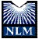

Sponsors
Running
Download
Install
FAQ
Bug Tracker
News
Links
Mailing List
Copyright
Note: GCC-XML has been succeeded by CastXML.
|
Many generous sponsors and contributors have supported this work. NLM continues to provide executive leadership in the administion of the project. The supporting agencies and institutes supporting this work include:
|  | National Library of Medicine (NLM) - Dr. Terry Yoo at NLM/NIH is sponsoring the bulk of this work as part of the Insight segmentation and registration toolkit (ITK). GCC-XML was originally created for the C++ parsing support needed by CABLE for generating interpreted language wrappers for ITK. |
| Insight Segmentation and Registration Toolkit - ITK is the original sponsoring project for GCC-XML. ITK is being funded by NLM to develop cutting-edge algorithms and techniques to support the Visible Human Project. | |
| Kitware, Inc. - Kitware personnel, primarily Brad King, were the principal developers of GCC-XML. |